![]()
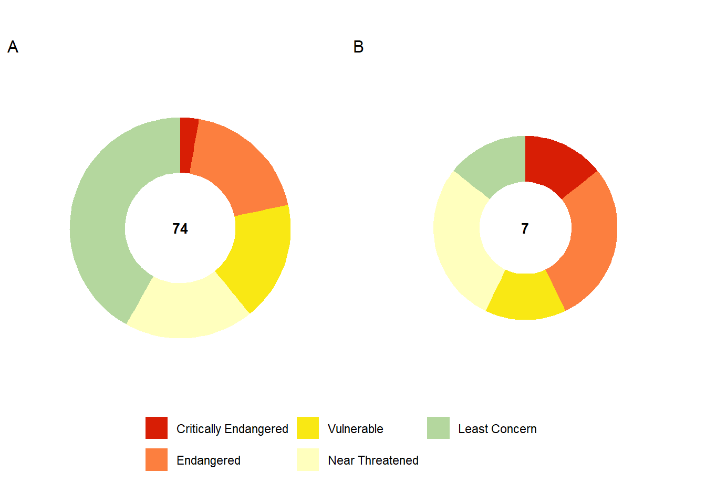
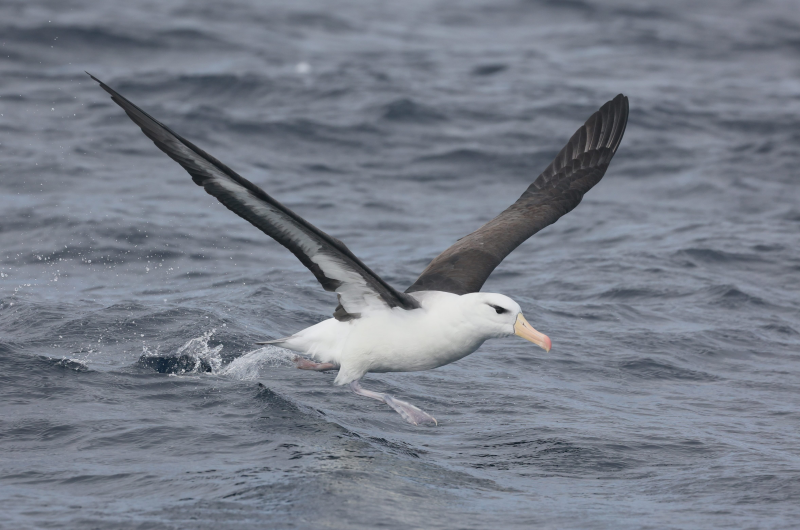
39%
of 74 assessed species are
Threatened
of 74 assessed species are
Threatened
9%
of 74 assessed species are
Endemic
of 74 assessed species are
Endemic
Key findings
- All seven seabird species endemic to the Benguela upwelling ecosystem are classified as regionally threatened for the first time.
- Africa’s only penguin species, the African penguin, is now the world’s most threatened penguin species, having been uplisted from globally Endangered to globally Critically Endangered.
- Albatrosses constitute the largest group of threatened seabird species largely due to incidental mortalities associated with interactions with commercial fishing vessels and due to predation by invasive mammals like house mice at their breeding colonies.
- Efforts are underway to restore Marion Island’s ecosystem and the many seabird species that breed there with the Mouse-Free Marion Project, a partnership between the Department of Forestry, Fisheries and Environment (DFFE) and BirdLife South Africa.
Threat status and pressures
Albatrosses constitute the most threatened group of seabirds in South African waters with nine threatened species including five Endangered and one Critically Endangered species, the Tristan albatross1. The latter species has approximately 8000 individuals remaining, the majority of which breed on Gough Island2. All threatened albatross species that regularly occur in South African waters are exposed to threats at sea in the form of bycatch from longline and trawl fisheries1 (Figure 1). Breeding colonies of albatrosses, petrels and shearwaters on Marion and Gough islands are also threatened by invasive alien mammals such as house mice which prey on nesting sites.
Just over a quarter of the global population of the regionally Endangered Crozet shag breed at the Prince Edward Islands where their declining population is likely linked to prey availability and exposure to human disturbance5. Two Endangered tern species, Kergeulen tern on Prince Edward Islands and Damara tern from mainland southern Africa both have very small populations of approximately 50 pairs within the region; the primary reason for their Endangered status6.
All three threatened penguin species, African, gentoo and southern rockhopper penguins are exposed to a plethora of threats including climate change, disease, pollution and human disturbance5 (Figure 2). Cormorants have a high proportion of threatened species which include two Endangered species (Cape and bank cormorants) that are endemic to the cool Benguela upwelling region off the coast of South Africa and Namibia (Box 1).
| Taxon | Extinct | Extinct in the Wild | Regionally Extinct | Critically Endangered (Possibly Extinct) | Critically Endangered | Endangered | Vulnerable | Near Threatened | Data Deficient | Rare | Least Concern | Total |
|---|---|---|---|---|---|---|---|---|---|---|---|---|
| Indigenous seabirds | 0 | 0 | 0 | 0 | 2 | 14 | 13 | 14 | 0 | 0 | 31 | 74 |
| Endemic seabirds | 0 | 0 | 0 | 0 | 1 | 2 | 1 | 2 | 0 | 0 | 1 | 7 |
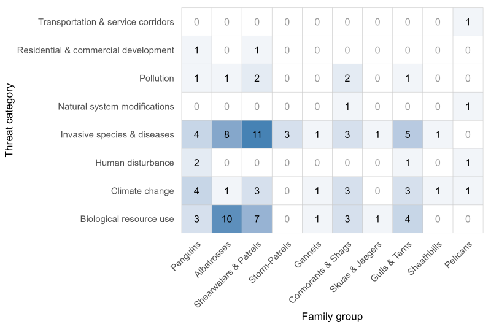
Trends - The Red List Index
The trend in species’ risk of extinction was measured using a global standard indicator, the IUCN Red List Index (RLI) of species9. The RLI is calculated for specific taxonomic groups based on genuine changes in Red List status over time. The RLI value ranges from 0 to 1. At a value of 1, all species are at low risk of extinction (Least Concern), while a value of 0 indicates that all species are extinct.

Seabirds are the most threatened bird group in South Africa1 as well as globally10. Despite this negative comparative status among bird groups, the number of uplisted seabird species in South Africa has been balanced by the same number of species that have been downlisted, i.e. four species for each, in the 2025 regional Red List assessment. Examples of species that have become less threatened include the black-browed albatross11 (downlisted from Near Threatened in 2015 to Least Concern in 2025, and spectacled petrel (downlisted from Vulnerable in 2015 to Near Threatened in 2025,12. The former species was previously exposed to high levels of unmitigated fisheries bycatch in both their breeding and non-breeding ranges – a situation that has improved through the scaling up of bycatch mitigation measures throughout the range of this species. Spectacled petrel populations have increased since the local extirpation of feral pigs on their major breeding colony on Inaccessible Island in the 1980s. Uplisted species include two pelagic species that breed in the Prince Edward Islands, light-mantled albatross and grey petrel both of which experience significant mortalities due to longline fishery bycatch. Both these species are also susceptible to mortalities by invasive mice on Marion Island13,14.
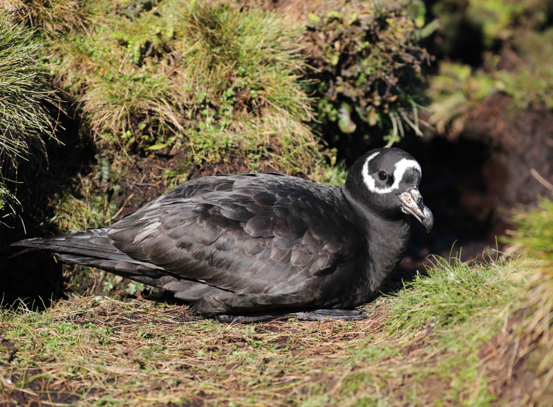
NoteBox 1. Benguela endemic seabirds - a special group of seabirds on the brink
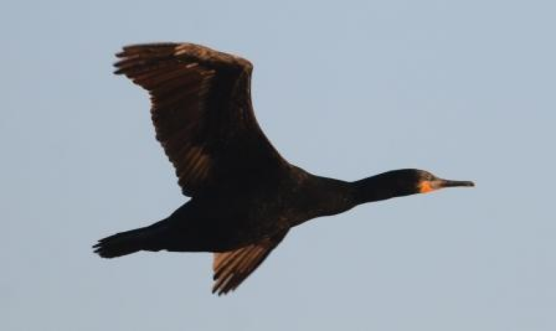
Cape cormorant – Endangered. (© Alistair McInnes)
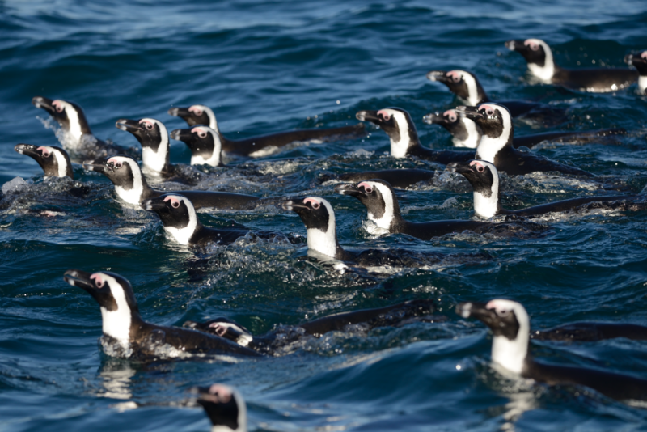
African penguin – Critically Endangered. (© Alistair McInnes)

Hartlaub’s gull – Vulnerable. (© Alistair McInnes)
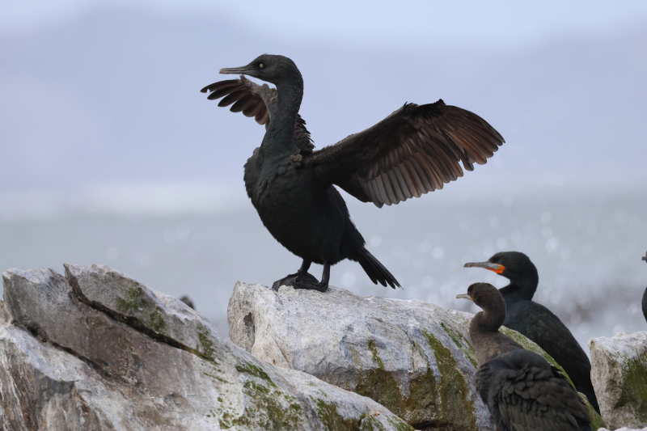
Bank cormorant – Endangered. (© Alistair McInnes)
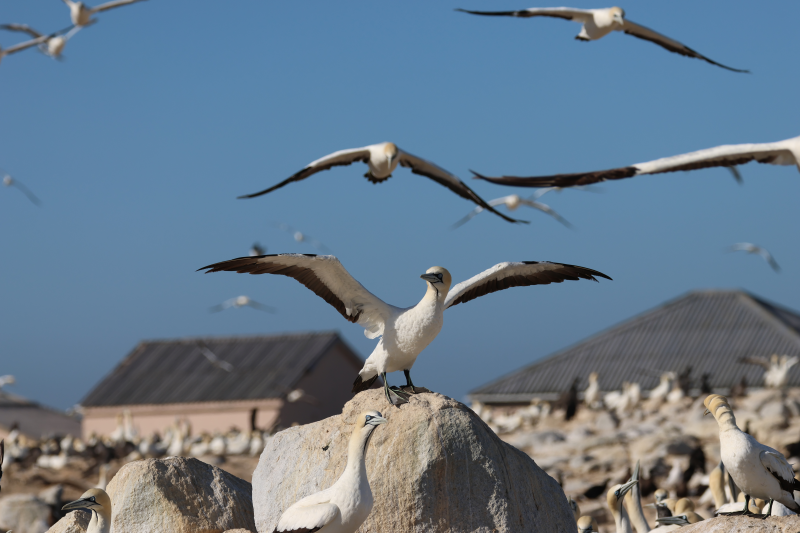
Cape gannet – Endangered. (© Alistair McInnes)
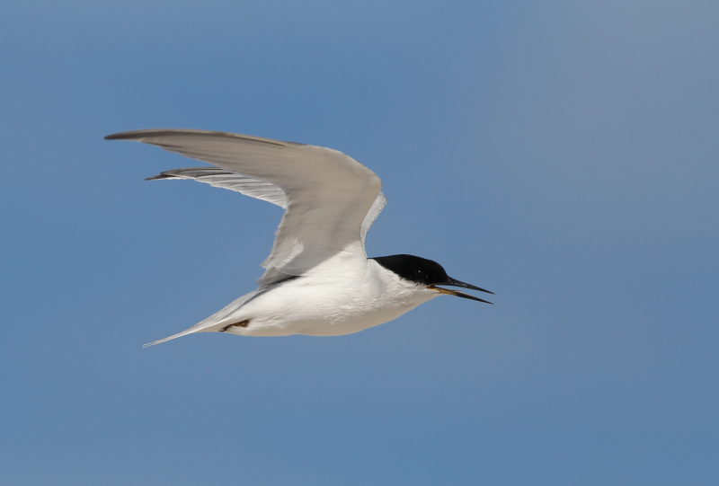
Damara tern – Endangered. (© Peter Ryan)
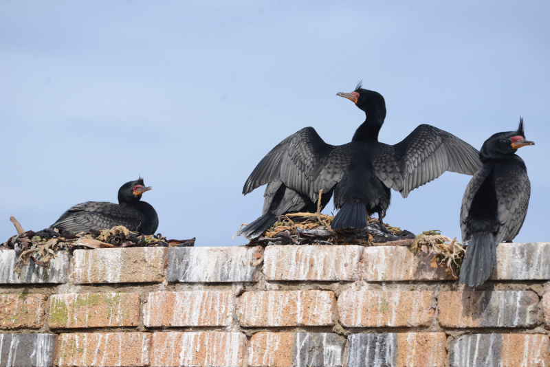
Crowned cormorant – Vulnerable. (© Alistair McInnes)
The Benguela upwelling region supports seven endemic seabird species. The regional Red List assessment of birds in 2025 marked the first instance in which all seven of these species were classified as threatened.
Three species—the African penguin (now globally Critically Endangered and regionally Endangered*), the Cape cormorant (globally and regionally Endangered), and the Cape gannet (regionally Vulnerable and globally Endangered)—have been classified as regionally threatened for more than a decade. Their status is largely driven by their dependence on small pelagic fish such as sardine and anchovy. Their prey is becoming increasingly scarce, due resource competition from the commercial purse-seine fishery and climate-driven range shifts in the prey species7,15,16.
Hartlaub’s gull and crowned cormorant have been uplisted regionally to Vulnerable due to a combination of threats including human disturbance at breeding colonies, predation and diseases such as highly pathogenic avian influenza8,15. Bank cormorants have been recognised as regionally and globally threatened throughout this century due to a combination of threats including a decline in their major prey species, most notably West Coast rock lobster, but also breeding failure associated with climate change driven intensification of storm events and heat exposure17.
The relatively small population of Damara terns in South Africa have continued to decline largely due to disturbance at their coastal nesting sites6.
*Regional assessments refer to assessments done for South Africa’s area of jurisdiction and are available at www.birdlife.org.za. Global assessments are for the entire global population of a species and include the population outside of South Africa, these assessments are available on the IUCN Red List.
Recovery effort
As part of the Global Biodiversity Framework (GBF) Target 4, signatories are committed to taking urgent action to halt human-induced extinctions, reduce species’ risk of extinction, and improve their conservation status by 2030. Achieving this target requires coordinated efforts to prevent and reverse species declines, recover and conserve populations, and maintain genetic diversity, particularly among threatened species. South Africa has initiated a process for each of the taxonomic groups that have been comprehensively assessed following the IUCN Red List criteria, to identify and prioritise species that are in urgent need of interventions to promote their recovery to contribute to achieving the GBF Target 4 goals.
NoteBox 2. Mouse-free Marion
Globally, invasive species are among the greatest threats to seabirds. South Africa’s subantarctic Prince Edward Island group (comprising Marion and Prince Edward islands) provides critical breeding grounds for Southern Ocean seabirds. In total, 29 seabird species breed on Prince Edward Island while 28 species breed on the larger Marion Island. Together, these islands host nearly half of the global population of wandering albatrosses (Diomedea exulans). However, Marion Island’s seabirds face a severe threat: invasive house mice (Mus musculus), accidentally introduced in the 1800s, are pushing the island’s ecosystem, and its seabird populations, towards ecological collapse.
In partnership with the South African Department of Forestry, Fisheries and the Environment, BirdLife South Africa established Saving Marion Island’s Seabirds: The Mouse-free Marion (MFM) Project in 2021. This project’s objective is the eradication of house mice to restore Marion Island’s biodiversity and ecological integrity. The MFM Project is currently in its planning and preparatory phase, with the expected date of the eradication operation dependent on securing required funding and regulatory approvals well before the operation.
Nineteen of the 28 seabird species breeding on Marion Island are at risk of local extinction due to the impacts of invasive house mice. Marion Island’s warming and drying climate is creating improved conditions for mice. Having already driven many invertebrate populations to negligible levels, some of which are now at risk of extinction, mice have turned to eating seabird eggs, chicks, and more recently even adult birds. Given projections of ongoing climate change, this threat is likely to intensify.
The eradiation of mice to restore Marion Island requires broadcasting of specially-formulated rodenticide bait from spreader buckets slung beneath helicopters guided by GPS technology. Every aspect of the operation—from timing and bait selection to helicopter use, loading techniques, GIS mapping tools, and health and safety procedures—is based on previous operational experience and best practice principles developed from decades of island restoration work worldwide and refined by island-specific trials, and extensive ecological research on Marion Island.
Around the world, numerous islands have been restored through the eradication of invasive species, particularly introduced predators. The dramatic recoveries of native flora and fauna in these places provide strong evidence that similar interventions can deliver lasting biodiversity gains. For seabirds, removing a major threat not only allows populations to rebound but also strengthens their resilience against other pressures, such as climate-change driven ocean changes and fisheries bycatch. Moreover, this intervention will also help buffer seabird populations against emerging threats, including diseases such as the Highly Pathogenic Avian Influenza (HPAI). See the subantarctic page for further details.

Grey-headed albatross chicks on Marion Island. (© Ben Dilley)
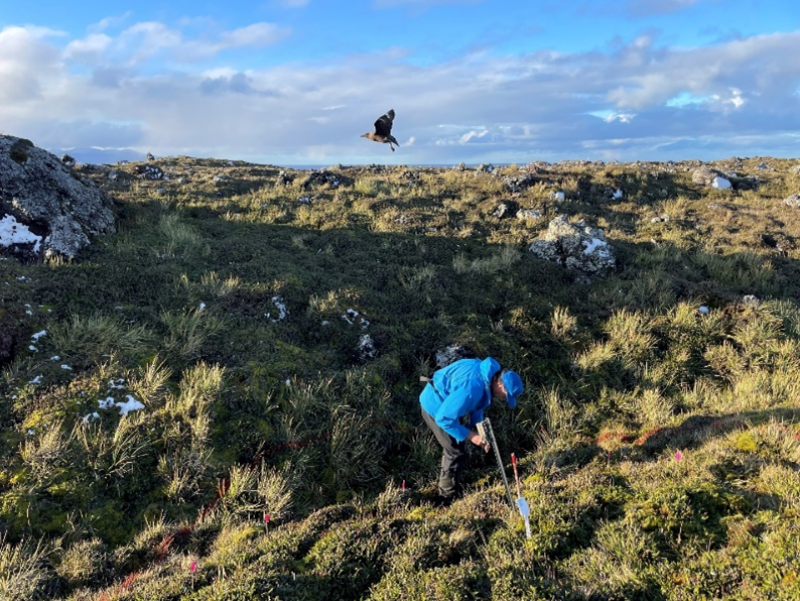
Conducting bait trials on Marion Island. (© Michelle Risi)
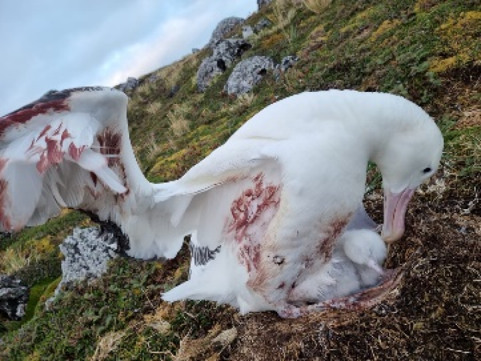
Wounded wandering albatross after being preyed on by house mice on Marion Island. (© Michelle Risi)
Recent efforts to support the establishment of a new African penguin colony at De Hoop (Box 4) parallels a previous similar initiative with Cape gannets led by DFFE and CapeNature. In Lambert’s Bay where Cape gannets were abandoning breeding due to seal encroachment, their return was encouraged through the use of gannet decoys and playing audio recordings of gannets. This was a pioneering conservation effort and represents a significant recovery for the Cape gannets at this site, where they had completely abandoned the island in 2005. The Cape gannet population has remained at ~ 20 000 to 30 000 birds in subsequent years, indicating the effectiveness of ongoing conservation measures and effort.
Approach
For more on the methodology used in this assessment, please visit the bird page.
See details about the IUCN Red List assessments process here.
Acknowledgements
BirdLife South Africa is thanked for providing the resources and convening the experts needed to conduct the regional IUCN Red List assessments used in this assessment. All seabird experts and assessors who gave their time, provided data and contributed intellectual property toward the completion of individual seabird assessments are sincerely thanked. The Department of Forestry, Fisheries and the Environment is thanked for hosting a long-term data series that has supported the completion of both regional and global assessments for seabirds that breed within South Africa’s Exclusive Economic Zone including species that breed on the Prince Edward Islands.
Recommended citation
McInnes, A., Hagen, C., Faure, P., Angel, A., Wolfaardt, A., Adams, R., Makhando, A.B., Van der Bank, M.G., Van Der Colff, D., Monyeki, M.S., & Hendricks, S.E. 2025. Seabirds. National Biodiversity Assessment 2025. South African National Biodiversity Institute. http://nba.sanbi.org.za/.
References
1. Lee, A.T.K. et al. 2025. The 2025 Red Data book of birds of South Africa, Lesotho and Eswatini, I., M. et al. (eds),. BirdLife South Africa, Johannesburg, South Africa.
2. Banda, S. 2025. Tristan albatross. The 2025 Red Data book of birds of South Africa, Lesotho and Eswatini BirdLife South Africa.
3. Maree, B.A. et al. 2014. Significant reductions in mortality of threatened seabirds in a South African trawl fishery. Animal Conservation 17: 520–529. https://doi.org/10.1111/acv.12126
4. Rollinson, D.P. et al. 2017. Patterns and trends in seabird bycatch in the pelagic longline fishery off South Africa. African Journal of Marine Science 39: 9–25. https://doi.org/10.2989/1814232X.2017.1303396
5. Makhado, A. & R.J.M. Crawford. 2025. Southern rockhopper penguin. The 2025 Red Data book of birds of South Africa, Lesotho and Eswatini BirdLife South Africa.
6. Whittington, P.A. 2025. Damara tern. The 2025 Red Data book of birds of South Africa, Lesotho and Eswatini BirdLife South Africa.
7. Hagen, C. 2025. African penguin. In Lee, A.T.K. et al. (eds), The 2025 Red Data book of birds of South Africa, Lesotho and Eswatini BirdLife South Africa.
8. Makhado, A.B. et al. 2025. Hartlaub’s gull. The 2025 Red Data book of birds of South Africa, Lesotho and Eswatini BirdLife South Africa.
9. Butchart, S.H.M. et al. 2004. Measuring global trends in the status of biodiversity: Red List indices for birds. PLoS Biology 2: https://doi.org/10.1371/journal.pbio.0020383
10. Dias, M.P. et al. 2019. Threats to seabirds: A global assessment. Biological Conservation 237: 525–537. https://doi.org/10.1016/j.biocon.2019.06.033
11. Angel, A. 2025. Black-browed albatross. In Lee, A.T.K. et al. (eds), The 2025 Red Data Book of Birds of South Africa, Lesotho and Eswatini BirdLife South Africa.
12. Banda, S. & H. Smit-Robinson. 2025. Spectacled petrel. In Lee, A.T.K. et al. (eds), The 2025 Red Data book of birds of South Africa, Lesotho and Eswatini BirdLife South Africa.
13. Banda, S. 2025. Light-mantled albatross. In Lee, A.T.K. et al. (eds), The 2025 Red Data book of birds of South Africa, Lesotho and Eswatini BirdLife South Africa.
14. Banda, S. 2025. Grey petrel. In Lee, A.T.K. et al. (eds), The 2025 Red Data book of birds of South Africa, Lesotho and Eswatini BirdLife South Africa.
15. McInnes, A.M. et al. 2025. Cape cormorant. In Lee, A.T.K. et al. (eds), The 2025 Red Data book of birds of South Africa, Lesotho and Eswatini BirdLife South Africa.
16. Pistorius, P. 2025. Cape gannet. In Lee, A.T.K. et al. (eds), The 2025 Red Data book of birds of South Africa, Lesotho and Eswatini BirdLife South Africa.
17. Shaw, K. & R.J.M. Crawford. 2025. Bank cormorant. The 2025 Red Data book of birds of South Africa, Lesotho and Eswatini BirdLife South Africa.
18. Department of Forestry, Fisheries and the Environment. 2025. National plan of action II for the conservation and management of seabirds in south african fisheries. Department of Forestry, Fisheries; the Environment.
19. BirdLife International. 2024. Species factsheet: African penguin (spheniscus demersus.